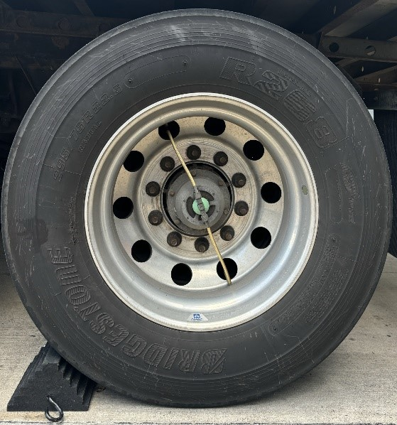
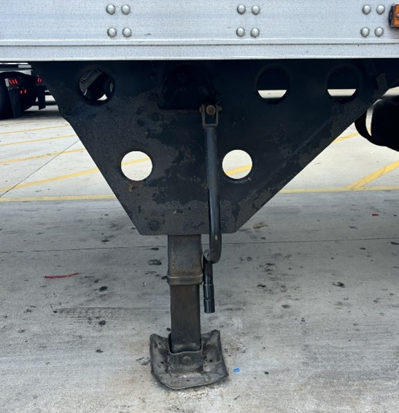
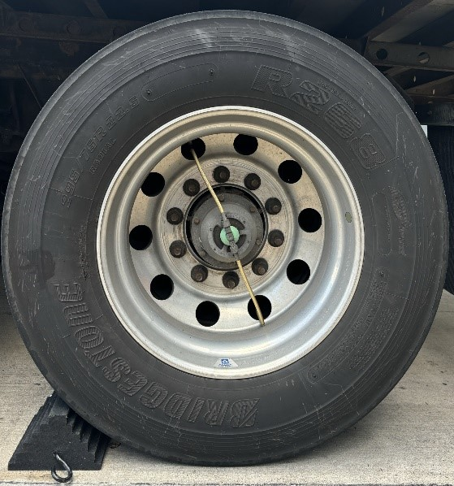
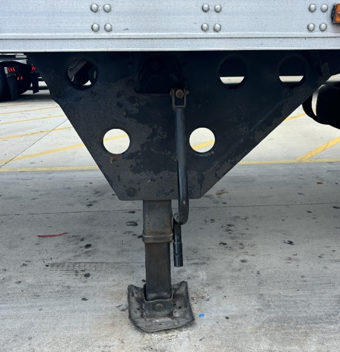
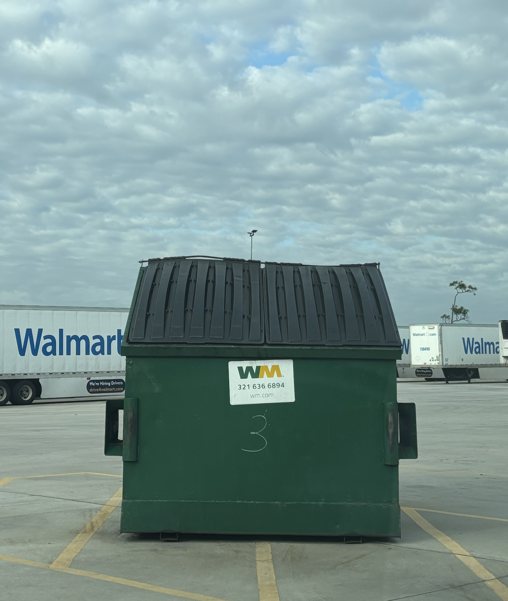
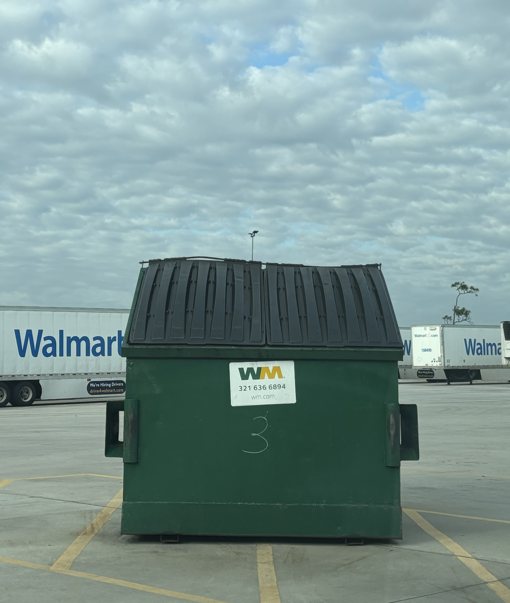
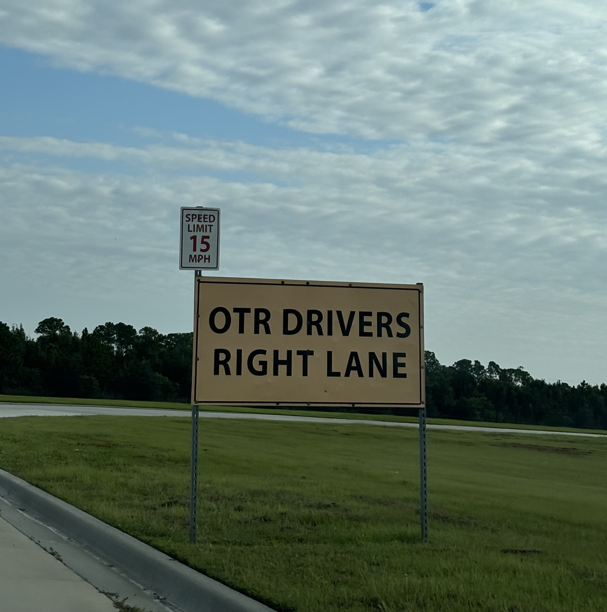

Home Page

Map Key:

Dock Doors

Waiting Area
Select Language
Safety Guidelines
Please read and acknowledge the safety guidelines below:
No Idling Policy: DO NOT keep your tractor running for more than THREE (3) MINUTES.
Upon Arrival at the Dock Door:
Assigned dock door should be clear with a green light.
- Dolly down and chock the trailer wheels.
- Unlatch the trailer and pull forward until the fifth wheel is clear of the trailer or pull out from under the trailer and park the tractor 10 feet in front of the trailer.
- Tractors must be latched to pup trailers with trailer wheels chocked and tractor keys taken to the Traffic Office.
- Do not move your trailer without written approval.
- If the freight requires refrigeration, you must turn off the reefer unit unless specifically directed to leave it running.
- Make sure your trailer tandems are slid all the way to the rear of the trailer.
After Documented Trailer Release is Given to You by the Freight Bill Clerk:
- Check the red and green lights at the rear of the trailer. Green light must be on before re-latching to the trailer.
- If the red light is on, do not move your tractor/trailer. Contact the dock Supervisor or Manager who will determine if the trailer is ready to be released and will notify you to move or not to move your tractor/trailer.
- Pull your tractor/trailer forward approximately one (1) foot.
- Get out of your tractor and visually check to see if the warehouse dock door has been closed.
- If the warehouse dock door is not closed, do not move your tractor/trailer. Contact the Dock Supervisor/Manager who will determine if the trailer is ready to be released and will notify you to move or not to move your tractor/trailer.
- If the warehouse dock door is closed, proceed to the Truck Gate exit.
While in Our Distribution Center:
- No smoking, chewing, or dipping is allowed on the dock or inside the trailers.
- Shoes and shirt must be always worn.
- Use of profanity is prohibited.
- No one under the age of 18 is allowed in the unloading area.
- Drivers must go to the lounge during breaks and lunch.
- Bad pallets must be down stacked or re-stacked onto good pallets.
- Drivers are required to unload at Walmart’s discretion. Lumpers are not permitted, and Drivers/co-Drivers will not be allowed to use power equipment. Appointment Drivers at Grocery Distribution Centers should see Appointment Clerk for additional information.
- Rescheduling of appointments is required if you are more than one (1) hour late for your appointment.
- Firearms, drugs, or alcoholic beverages are not allowed on company property.
- Visitor badges must be always worn visibly.
For Drop, Bobtail, and Backhaul Drivers:
- Do NOT pull any trailer from a dock door. If you have a need for a trailer that is staged in a dock door, report it to the Traffic Office immediately. A Yard Driver will be notified to pull the trailer.
- Make sure that your trailer tandems are slid all the way to the rear of the trailer.
- Do NOT remove seal from trailers.
- Do NOT remove trailer tags from trailers.
- Report any and all trailer damage immediately to Asset Protection at the Truck Gate.
- Make sure that all trash and debris is deposited in the proper receptacle.
- When leaving the facility, stop at the Truck Gate and exit your tractor. Meet the Asset Protection associate at the rear of the trailer.

 





 

Enter Dock Door Number
Directions
Please proceed to the waiting area.
No Idling Policy: DO NOT keep your tractor running for more than THREE (3) MINUTES.
After checking in at the Truck Gate:
Go straight at the intersection and follow the yellow arrows.

When you reach the breezeway, the spots to the right on the back fence are the waiting area.

These spots should fall inbetween zones A1 and A2.
After parking, walk your paper work to the Central Receiving Office (CRO) at door 25. It is directly through the breezeway, across from the waiting area. Refrence the yard map by clicking the Home button.

Don't forget to wear a high visibility reflective vest while walking in the yard.

CRO will call you when there is a dock door ready for you to move in to. When you get the door, type in the number on the previous screen for directions.
Please proceed to dock doors 1-33.
After checking in at the Truck Gate:
Take a left at the intersection and follow the white arrows.

Take a right to reach the dock doors. Refrence a map of the yard by clicking the home button.
Find your dock door number and park your trailer. Follow the Safety Guidelines: Bump the dock, dolly down, chock your wheels, and fully disconnect.
If your trailer has swing doors: Park a few feet infront of the dock door and open the doors. Then back up and bump the dock and follow the safety guidelines.
Click "I've arrived" when finished parking.
Please proceed to dock doors 34-71.
After checking in at the Truck Gate:
Go straight at the intersection and follow the yellow arrows.
Take a left at the breezeway, then turn right at the end of the breezeway to reach the dock doors. Refrence a map of the yard by clicking the home button.

Find your dock door number and park your trailer. Follow the Safety Guidelines: Bump the dock, dolly down, chock your wheels, and fully disconnect.
If your trailer has swing doors: Park a few feet infront of the dock door and open the doors. Then back up and bump the dock and follow the safety guidelines.
Click "I've arrived" when finished parking.
Next Steps
After parking, walk your paper work to the Central Receiving Office (CRO) at door 25. It is directly through the breezeway. Refrence the yard map by clicking the Home button.
Don't forget to wear a high visibility reflective vest while walking in the yard.
CRO will call you when your paper work is complete.
Following the call get out of your vehicle and walk to the Central Receiving Office (CRO). Follow the safety guidelines.
After picking up your paperwork, wait for a green light on the dock before pulling out.
Before checking out with the Truck Gate, please dispose of any trash you have in the dumpster provided by CRO.
After disposing of trash properly, you may proceed to the Truck Gate and check out with an AP Associate.
Please use the right lane when exiting.
Please contact the DC at (321) 504-0120 if you have any questions or concerns. Acess a map of the yard by clicking on the Home button in the top right corner.